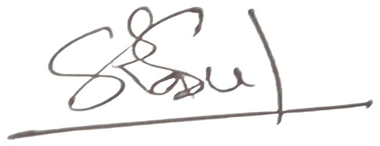

Essay · Medium
State Space Models and Mamba from First Principles
A walkthrough of state space models and the Mamba architecture, built up from first principles.
Read on MediumAI Engineer · Vision, LLM, Speech & Agentic Systems
I build production computer vision, speech, LLM and agentic systems, with a focus on low-resource (Bangla) language AI and on-premise deployment.
Over 3+ years I’ve shipped 12+ live products spanning OCR and identity verification, Bengali ASR-driven workflows, conversational AI and document intelligence. I’m experienced in LLM post-training and evaluation, and published in Symmetry (2025).
– present 1 yr 6 mos
AI Engineer
Dhaka
Developed a medicine ordering platform between wholesalers and retailers, enabling urgent requests and a streamlined review, modify and approve workflow backed by locally deployed AI models.
Built an LLM-powered reservation assistant that lets front-desk staff find availability, quote corporate, group and public rates, and hold rooms in the PMS with staff approval.
Deployed a voice-based referral application connecting Upazila Health Complexes to tertiary hospitals nationwide; STT extracts clinical keywords from speech and auto-fills government referral forms, with all models hosted on-premise for data security.
Platform modules
Developed a digital healthcare platform for electronic prescriptions and automated doctor–patient communication, simplifying prescription management, patient follow-ups and clinical workflows.
Built an emotion-aware AI companion with local and API-based pipelines (Whisper, Emotion2Vec, Gemma4, Qwen3-TTS) for real-time voice conversations, featuring personalized discussions, routine and medication reminders, and social engagement.
Built a voice-driven grievance system for Bengali-speaking migrant workers, integrating STT, LLM-based structured extraction, TTS and PostgreSQL ticketing, with a state-driven conversational flow, automated validation and real-time admin monitoring.
System outline
Configurable multi-workflow architecture
Built a full-stack platform that converts Bengali speech into structured English data using Bangla ASR and a local LLM, with a configurable multi-workflow architecture for healthcare referrals, order management and other use cases.
Designed a medicine recognition pipeline that indexes deep image embeddings for similarity search against a medicine database, with OCR-based text retrieval to verify each match.
Developed a system that verifies existing users and registers new ones by scanning card front and back with Bangla/English OCR, MRZ parsing and 2D barcode reading.
Developed a full-stack platform (English & German) that extracts key metrics from structured and unstructured financial documents and generates analysis reports, forecasts, interactive visualizations and automated risk assessments.
Implemented license-plate detection and recognition to record vehicle entries for apartment complexes in Dhaka.
– 1 yr
ML Engineer
Dhaka
Defect detection
Designed a detection pipeline for broken stitches, open seams, dirt marks and foreign objects.
Measurement points
Developed an API that measures waist, hem, front rise, back rise and inseam of denim pants from images.
System outline
Automated fine-tuning and multi-metric evaluation
Developed an agentic LLM training and evaluation system featuring specialized Trainer and Evaluator agents to automate model fine-tuning using DPO and GRPO datasets and benchmark trained models across multiple evaluation metrics.
– 9 mos
ML Engineer (Intern)
Rangpur
Trained real-time detection models on live camera footage.
Built a model to detect pacemakers in human chest X-rays.
Implemented bone segmentation on X-ray images of pneumonia patients.
Researched and built a Local Attention Grouping model to classify gastritis atrophy and intestinal metaplasia.
Streamlit app that lets emergency-unit medical officers fill in patient referral forms by voice.
Voice-based tuberculosis case collection platform built with Streamlit.
Self-hosted voice AI platform: talk to custom personas that listen, remember and answer in a cloned voice.
End-to-end toolkit for fine-tuning, evaluating and serving Faster-Whisper models.
Voice-driven agent that retrieves company financial data using zero-shot intent classification, entity recognition, the FMP API and RAG.
DemoMulti-agent orchestration framework that acts as an end-user assistant for applications, approvals and multi-step tasks.
Offline chatbot running Ollama models behind a Streamlit interface.
ScreenshotFine-tuning pipeline for building Gemma-based AI applications.
Experiments with RT-DETR, a real-time detection transformer.
CNN classifier (VGG19 and ResNet) that identifies which of four people wrote a handwritten signature.
Real-time 2D and 3D human pose from a webcam, building on MotionAGFormer.
YOLOv8 bolt and nut detection on mechanical connectors, with regression-corrected center points (mean error about 0.4 px).
Leaf disease classifier (ResNet, VGG19, YOLOv8) served through a Flask app and packaged with Docker.
DemoPyTorch classifier with a ResNet backbone that labels children's facial images as autistic or non-autistic.
YOLOv8 model for detecting koalas in the wild.
OutputWhite matter hyperintensity segmentation with a customized SegMamba, a Mamba-based 3D medical segmentation model.
PyTorch pipeline for fine-grained, multi-class GI endoscopy image classification.
VAE image-generation experiments on MNIST, cats-and-dogs and pneumonia chest X-ray datasets.
Fine-tuning a language model for news summarization on the CNN/DailyMail dataset.
Jupyter notebooks for tweet sentiment classification with logistic regression and Naive Bayes, plus word-embedding experiments.
No projects match that search.
Journal article · Symmetry · July 2025
Symmetry 2025, 17(7), 1155 · doi:10.3390/sym17071155
Gait recognition is a reliable biometric approach that uniquely identifies individuals based on their natural walking patterns. It is widely used to recognize individuals who are challenging to camouflage and do not require a person’s cooperation. The general face-based person recognition system often fails to determine the offender’s identity when they conceal their face by wearing helmets and masks to evade identification. In such cases, gait-based recognition is ideal for identifying offenders, and most existing work leverages a deep learning (DL) model. However, a single model often fails to capture a comprehensive selection of refined patterns in input data when external factors are present, such as variation in viewing angle, clothing, and carrying conditions. In response to this, this paper introduces a fusion-based multi-model gait recognition framework that leverages the potential of convolutional neural networks (CNNs) and a vision transformer (ViT) in an ensemble manner to enhance gait recognition performance. Here, CNNs capture spatiotemporal features, and ViT features multiple attention layers that focus on a particular region of the gait image. The first step in this framework is to obtain the Gait Energy Image (GEI) by averaging a height-normalized gait silhouette sequence over a gait cycle, which can handle the left–right gait symmetry of the gait. After that, the GEI image is fed through multiple pre-trained models and fine-tuned precisely to extract the depth spatiotemporal feature. Later, three separate fusion strategies are conducted, and the first one is decision-level fusion (DLF), which takes each model’s decision and employs majority voting for the final decision. The second is feature-level fusion (FLF), which combines the features from individual models through pointwise addition before performing gait recognition. Finally, a hybrid fusion combines DLF and FLF for gait recognition. The performance of the multi-model fusion-based framework was evaluated on three publicly available gait databases: CASIA-B, OU-ISIR D, and the OU-ISIR Large Population dataset. The experimental results demonstrate that the fusion-enhanced framework achieves superior performance.
@article{hasan2025mmfgait,
title = {MMF-Gait: A Multi-Model Fusion-Enhanced Gait Recognition
Framework Integrating Convolutional and Attention Networks},
author = {Hasan, Kamrul and Tuhin, Khandokar Alisha and
Bapary, Md Rasul Islam and Doula, Md Shafi Ud and
Alam, Md Ashraful and Ahad, Md Atiqur Rahman and
Uddin, Md. Zasim},
journal = {Symmetry},
volume = {17},
number = {7},
pages = {1155},
year = {2025},
doi = {10.3390/sym17071155}
}
Essay · Medium
A walkthrough of state space models and the Mamba architecture, built up from first principles.
Read on MediumBegum Rokeya University, Rangpur
Senior Research Scientist, Microsoft Research
Operation Lead, Bangladesh Machine Learning Institute
Senior AI R&D Engineer, Deloitte, Japan
Professor, Department of Computer Science & Engineering
Dean, Faculty of Engineering & Technology, Begum Rokeya University, Rangpur
For roles, collaborations or freelance projects, write to me directly or leave a message here.
